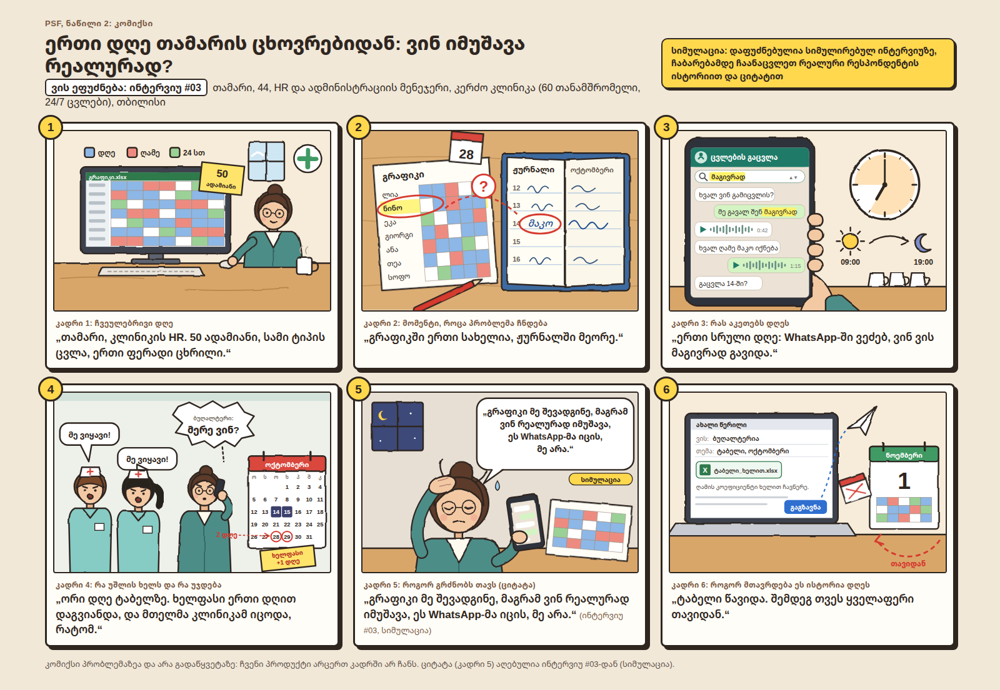
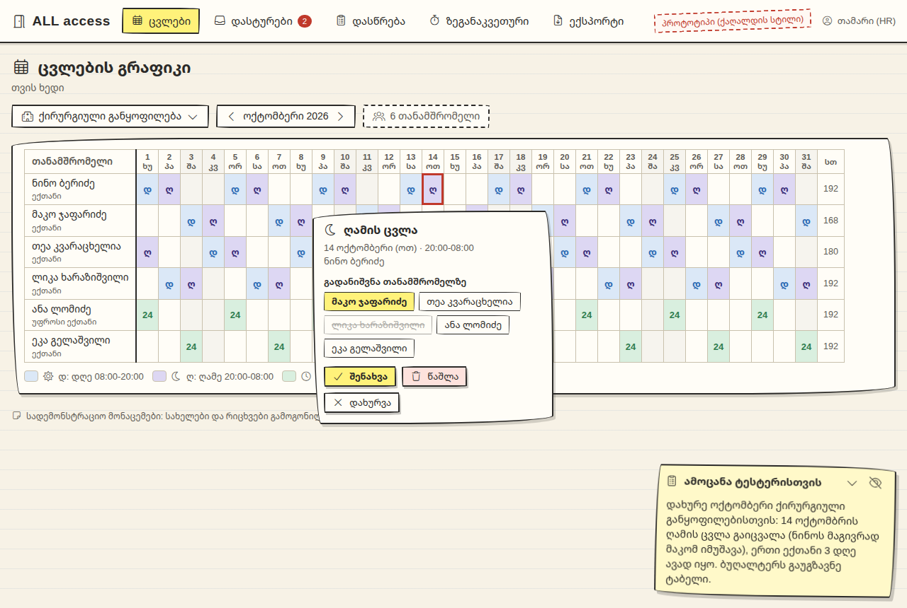
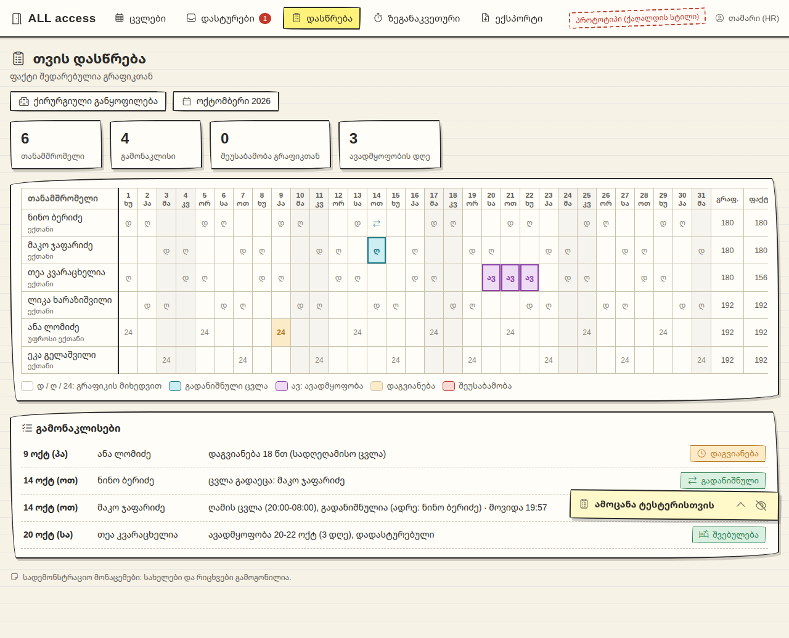
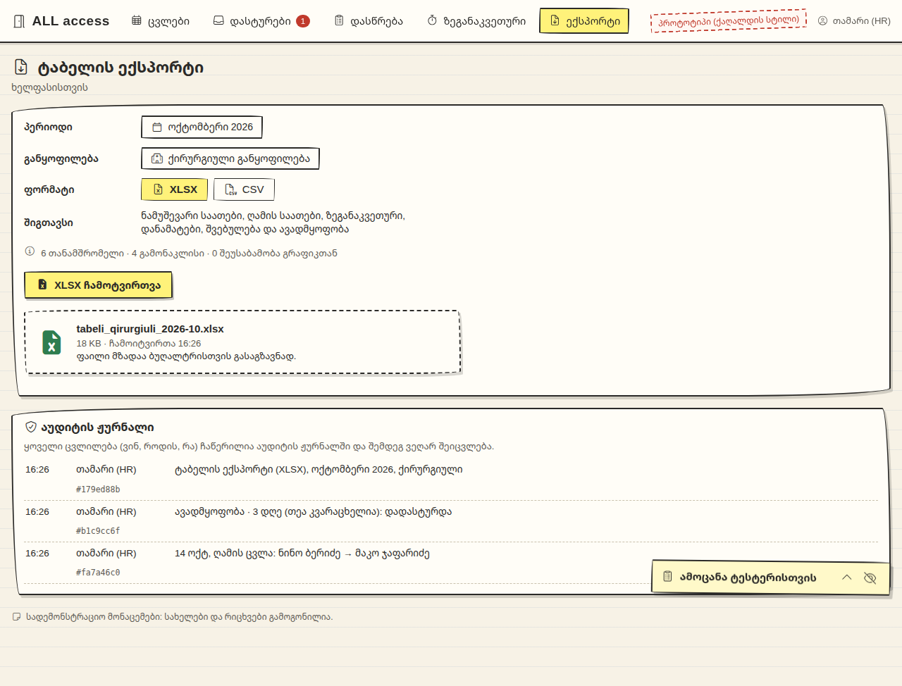
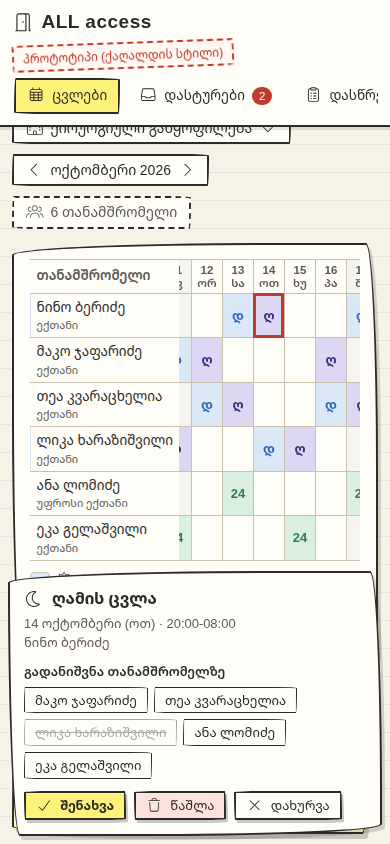

კურსის წესი 3: ციტატა, ფოტო ან რიცხვი რეალური ინტერვიუს გარეშე არ ჩაითვლება. ქვემოთ ჩამოთვლილი ნაწილები AI პერსონებით არის სიმულირებული და ყველგან აქვს ნიშანი სიმულაცია. არცერთი სიმულირებული ციტატა ან რიცხვი რეალურად არ არის წარმოდგენილი. ჩაბარებამდე გუნდი ამ ნაწილებს რეალურ ადამიანებთან ხელახლა აკეთებს.
| სტარტაპის სახელი | ALL access (allaccess.ge) |
|---|---|
| გუნდის წევრები (სახელი, გვარი) | [წევრი 1], [წევრი 2], [წევრი 3] შესავსებია |
| ერთი წინადადება: „ჩვენ ვეხმარებით [ვის], რომ [რა გააკეთოს]“ | ჩვენ ვეხმარებით ცვლებით მომუშავე კომპანიების HR და ადმინისტრაციის მენეჯერებს, რომ თვის ბოლოს იცოდნენ, ვინ რეალურად იმუშავა თითოეული ცვლა, და ბუღალტერს ტაბელი დღეების ნაცვლად საათებში ჩააბარონ. |
| მომხმარებელი (ვიწრო სეგმენტი, არა „ყველა“) | თბილისის 20-100 თანამშრომლიანი კომპანიების HR/ადმინისტრაციის მენეჯერები, სადაც მუშაობენ ცვლებით (24/7 კლინიკა, საწყობი სეზონური ზეგანაკვეთურით, call center ღამის ცვლით). ფილტრი აღარ არის „აქვს კარის სისტემა“, არამედ „აქვს ცვლები ან ცვალებადი საათები“ (02, 03, 05). |
| პრობლემა, რომელსაც ვაგვარებთ | გრაფიკი ერთგანაა, ხოლო რეალობა (გაცვლები, ჩანაცვლება, ზეგანაკვეთური, ღამის ცვლა, შვებულება/ბიულეტენი) WhatsApp/Viber-ში, ქაღალდის ჟურნალებსა და ცალკე Excel-ებში იფანტება. თვის ბოლოს მენეჯერი ამას ხელით აღადგენს 1-2 სამუშაო დღე და დავები მტკიცებულების გარეშე რჩება (02, 03, 05). |
| გადაწყვეტა (რას აკეთებს პროდუქტი) | ALL access-ში ცვლები, როტაციები და გრაფიკები ერთ ადგილასაა, დასწრება ფასდება გრაფიკთან, შვებულება ბალანსებით და მოთხოვნები ერთ inbox-შია, ზეგანაკვეთური ითვლება დანამატის ტარიფით და ტაბელი გადის CSV/XLSX-ით. ყველა ცვლილება აუდიტის ჟურნალში იწერება, ასე რომ დავისას ჩანს, ვინ რა შეცვალა. |
| რას იყენებენ მომხმარებლები ახლა (არსებული ალტერნატივა) | Excel-ის ფერადი გრაფიკი, WhatsApp/Viber/Slack ჩატების ხელით გადაკითხვა, ცვლის უფროსის ქაღალდის ჟურნალი, ცალკე Excel შვებულების ნაშთისთვის, ზოგან ასისტენტის Excel მაკრო (01, 02, 03, 05). Google Sheets/Form და ერთი უფასო აპი სცადეს და მიატოვეს (01, 03, 05). |
| პრობლემის ფორმულირება ახლა: [ვინ], როცა [სიტუაცია], ცდილობს [რის გაკეთებას], მაგრამ [რა უშლის ხელს] | HR/ადმინისტრაციის მენეჯერი ცვლებიან კომპანიაში, როცა თვის ბოლოს ტაბელს ხურავს, ცდილობს გაარკვიოს, ვინ რეალურად იმუშავა თითოეული ცვლა, მაგრამ გაცვლები და გამონაკლისები ჩატებსა და ქაღალდზეა მიმოფანტული. ახლა იყენებს Excel-ს და ჩატების ხელით გადაკითხვას, რაც 1-2 სამუშაო დღეს ჭამს და დავას ფაქტის გარეშე ტოვებს. |
Week 1-ის ფორმულირება (ინტერვიუებამდე, შედარებისთვის): „HR მენეჯერი, როცა თვის ბოლოს ტაბელს ამზადებს, ცდილობს ხელფასისთვის ზუსტი საათები ჩააბაროს, მაგრამ კარის სისტემის ჩანაწერები გრაფიკს და შვებულებას არ ითვალისწინებს.“ მთავარი ცვლილება: ცენტრში აღარ არის კარის ლოგი, არამედ უფსკრული გრაფიკსა და რეალურად ნამუშევარ ცვლას შორის.
| ინტერვიუერი | [წევრი 1] (დამკვირვებელი: [წევრი 2]) |
|---|---|
| რესპონდენტი: როლი, ასაკი, სად ვიპოვეთ | ერთადერთი HR, 31 წლის; IT კომპანია, 40 თანამშრომელი, ჰიბრიდი, ZKTeco კარი. LinkedIn, ცივი შეტყობინება (არ იცნობდა). |
| როდის შეექმნა პრობლემა ბოლოს (მისი სიტყვებით) | სექტემბრის ტაბელი, ორ საღამოს, ~6 სთ: „ადმინს ვთხოვე ექსპორტი ტერმინალიდან, თარიღები გადაბრუნებული მოვიდა. მერე Slack-ში #ოფისი ავიღე და ვკითხულობდი, ვინ როდის წერდა, რომ სახლიდან არის. ამას მარტო სამი საათი წავიდა.“ |
| საუკეთესო ციტატა | „კარი ზუსტად იცის, ვინ შემოვიდა. ის არ იცის, ვინ არ შემოვიდა, რადგან სახლიდან მუშაობდა.“ |
| რამ გაგვაკვირვა | ტკივილი კარის ლოგი კი არა, დისტანციური დღეებია, რომლებიც ლოგში არ ჩანს. დაგვიანებაზე დავა არ არსებობს (მოქნილი გრაფიკი), ხელფასი ფიქსირებულია. წასულის ბარათი 11 დღე აქტიური იყო, მაგრამ ეს შემთხვევითობად აღიქვა. |
| ჩანაწერის ფოტო / აუდიოს ნიშნული | არ არსებობს სიმულაცია; რეალურ ინტერვიუში ჩაიწერება. |
| ინტერვიუერი | [წევრი 1] |
|---|---|
| რესპონდენტი: როლი, ასაკი, სად ვიპოვეთ | ოფის-მენეჯერი (ადმინისტრაცია + ტაბელი), 38 წლის; ლოჯისტიკა, 70 თანამშრომელი (48 საწყობში), Hikvision კარი. Facebook HR ჯგუფი, პოსტზე კომენტარით გამოგვეპასუხა. |
| როდის შეექმნა პრობლემა ბოლოს (მისი სიტყვებით) | ოქტომბერი, ზეგანაკვეთური: „ცვლის უფროსის ჟურნალის ფოტო Viber-ში მომივიდა, მძღოლების ფურცლები ცალკე იყო, ექსელში ხელით გადავიტანე და ერთმანეთს არ ემთხვეოდა. ორი დღე წავიდა.“ შარშან ორ მტვირთავთან დავა 3 თვე გაგრძელდა: „შუაზე გავიყავით“. |
| საუკეთესო ციტატა | „კარი არ მაინტერესებს. მე ის მაინტერესებს, ვინ დარჩა ღამის 11-მდე და რატომ.“ |
| რამ გაგვაკვირვა | კარის სისტემა ტაბელის წყარო საერთოდ არ არის: საწყობში ჯგუფად შედიან, ერთი „ასკანერებს“. რეალური ტკივილი სეზონური ზეგანაკვეთური და ჟურნალების შეუსაბამობაა. ბარათის გათიშვა მისი საზრუნავი არ არის. |
| ჩანაწერის ფოტო / აუდიოს ნიშნული | არ არსებობს სიმულაცია; რეალურ ინტერვიუში ჩაიწერება. |
| ინტერვიუერი | [წევრი 2] (დამკვირვებელი: [წევრი 1]) |
|---|---|
| რესპონდენტი: როლი, ასაკი, სად ვიპოვეთ | HR და ადმინისტრაციის მენეჯერი, 44 წლის; კერძო კლინიკა, 60 თანამშრომელი, 24/7 ცვლები. გაცნობით: [წევრი 2]-ის ნათესავი ამ კლინიკაში ექთანია (HR მეგობარი არ არის). |
| როდის შეექმნა პრობლემა ბოლოს (მისი სიტყვებით) | წინა თვის ტაბელი, ორი კვირის წინ: „ორი სრული დღე დამჭირდა. ერთი დღე მარტო იმას წავიდა, რომ გამეგო, ვინ ვის მაგივრად გავიდა. გრაფიკში ერთი სახელია, WhatsApp-ში მეორე, ჟურნალში მესამე ხელმოწერა.“ ხელფასი ერთი დღით დაგვიანდა. |
| საუკეთესო ციტატა | „გრაფიკი მე შევადგინე, მაგრამ ვინ რეალურად იმუშავა, ეს WhatsApp-მა იცის, მე არა.“ (კომიქსის კადრი 5) |
| რამ გაგვაკვირვა | კარის სისტემა აქვთ (საოპერაციო, აფთიაქი), მაგრამ ტაბელს არ ეხება. ტკივილი ცვლების გაცვლაა (~30-40 თვეში, WhatsApp-ში) და შვებულების ნაშთი. ექიმებმა თითის სკანერი უარყვეს: „ჩვენ ბავშვები ვართ?“ |
| ჩანაწერის ფოტო / აუდიოს ნიშნული | არ არსებობს სიმულაცია; რეალურ ინტერვიუში ჩაიწერება. |
| ინტერვიუერი | [წევრი 2] (დამკვირვებელი: [წევრი 1]) |
|---|---|
| რესპონდენტი: როლი, ასაკი, სად ვიპოვეთ | ბუღალტერი (ხელფასი + ტაბელი), 52 წლის; სამშენებლო მასალების დისტრიბუცია, 25 თანამშრომელი, ბარათის სისტემა 2015 წლიდან. ბუღალტრების Facebook ჯგუფი / ასოციაციის ღონისძიება. |
| როდის შეექმნა პრობლემა ბოლოს (მისი სიტყვებით) | ამ თვეში: საწყობის თანამშრომელმა ბიულეტენი 20 რიცხვის შემდეგ მოიტანა, როცა ხელფასი უკვე დათვლილი იყო: „ხელახლა მომიწია გადათვლა, ერთი საათი წავიდა, და წელს ეს ხუთჯერ მოხდა.“ |
| საუკეთესო ციტატა | „ტაბელი? ორმოც წუთში ვაკეთებ. ბიულეტენი რომ დროზე მოიტანონ, ის მიშველის.“ |
| რამ გაგვაკვირვა | კომპანია ზუსტად ჩვენს ფილტრშია, მაგრამ შეჯერების ტკივილი არ აქვს: კარის ლოგს წლებია არავინ გადმოწერს, ტაბელი 40 წუთია. დირექტორი: „ძველი თუ მუშაობს, ფულს არ გადაიხდის“. |
| ჩანაწერის ფოტო / აუდიოს ნიშნული | არ არსებობს სიმულაცია; რეალურ ინტერვიუში ჩაიწერება. |
| ინტერვიუერი | [წევრი 3] (დამკვირვებელი: [წევრი 1]) |
|---|---|
| რესპონდენტი: როლი, ასაკი, სად ვიპოვეთ | ოპერაციების / ადმინისტრაციის მენეჯერი, 35 წლის; საცალო ქსელის სათაო ოფისი, 90 თანამშრომელი, S4A/ACB კარები. კოვორკინგის HR/ოპერაციების meetup, შემდეგ LinkedIn. |
| როდის შეექმნა პრობლემა ბოლოს (მისი სიტყვებით) | წინა თვის ტაბელი: „ასისტენტმა ექსპორტი 2 წუთში გააკეთა, მაგრამ მერე 9 საათი ზის და ხელით ასწორებს. მე ხუთ საათს ვუთმობ დავებს და ღამის ცვლებს.“ call center-ის ოპერატორი ჯარიმას არ დაეთანხმა: „ბარათი დამრჩა“. |
| საუკეთესო ციტატა | „ექსპორტი 2 წუთია. დანარჩენი 14 საათი იმის მტკიცებაა, რომ ექსპორტი ტყუის.“ |
| რამ გაგვაკვირვა | ფინანსური დირექტორი (ვინც იხდის) ტაბელზე კი არა, აუდიტზე და „ვინ შევიდა სერვერის ოთახში“ კითხვაზე ფიქრობს. ტელეფონით check-in call center-ში უკვე განიხილეს და შეაჩერეს: თანამშრომლებმა „თვალთვალი“ დაარქვეს. |
| ჩანაწერის ფოტო / აუდიოს ნიშნული | არ არსებობს სიმულაცია; რეალურ ინტერვიუში ჩაიწერება. |
| ინტერვიუერი | [წევრი 3] |
|---|---|
| რესპონდენტი: როლი, ასაკი, სად ვიპოვეთ | მფლობელი, 41 წლის; კაფე საბურთალოზე, 7 თანამშრომელი, კარის სისტემა არ აქვს. პირდაპირ მივედით კაფეში დაბალი დატვირთვის საათზე (11:00-12:00). |
| როდის შეექმნა პრობლემა ბოლოს (მისი სიტყვებით) | „გასულ კვირას, ხუთშაბათს. დილის 8-ზე მიმტანი არ მოვიდა, არც დარეკა, არც დაწერა. [...] ბოლოს თვითონ დავდექი, 12 საათი ფეხზე ვიყავი. ბოლო თვეში ეს მესამედ მოხდა.“ |
| საუკეთესო ციტატა | „საათებს რა უჭირს, ვითვლი. ის მითხარი, დილის 8-ზე მიმტანი რომ არ მოვა, ვინ დადგება.“ |
| რამ გაგვაკვირვა | საათების დათვლა პრობლემა არ არის (~30 წთ კვირაში); ტკივილი ბოლო წუთის ჩანაცვლებაა. ფულს არ გადაიხდის („WhatsApp უფასოა“). მეზობელ საცხობს (12 კაცი, 2 ცვლა) „უფრო უჭირს“: გაგვაცნო. |
| ჩანაწერის ფოტო / აუდიოს ნიშნული | არ არსებობს სიმულაცია; რეალურ ინტერვიუში ჩაიწერება. |

| რა ავაწყვეთ და რისგან | 5 ეკრანის დაწკაპუნებადი „ქაღალდის სტილის“ პროტოტიპი ერთ HTML ფაილში (ლეპტოპზე და ტელეფონზე იხსნება): ცვლების გრაფიკი, დასტურები (შვებულება ბალანსებით), თვის დასწრება გრაფიკთან შედარებით, ზეგანაკვეთური დანამატის ტარიფებით, ტაბელის ექსპორტი (XLSX/CSV) აუდიტის ჟურნალით. თითო ეკრანი ALL access-ის არსებულ ფუნქციას ასახავს; სახელები და რიცხვები გამოგონილია. საფუძველი: ინტერვიუ #03 და #05. |
|---|---|
| რა ამოცანა მივეცით ტესტერებს | „დახურე ოქტომბერი ქირურგიული განყოფილებისთვის: 14 ოქტომბრის ღამის ცვლა გაიცვალა (ნინოს მაგივრად მაკომ იმუშავა), ერთი ექთანი 3 დღე ავად იყო. ბუღალტერს გაუგზავნე ტაბელი.“ |




| ტესტერი | რა გააკეთა | სად დაიბნა ან გაჩერდა | რა თქვა (ციტატა) |
|---|---|---|---|
| #1 ქეთევანი, 39 უფროსი ექთანი და გრაფიკის შემდგენი, კერძო კლინიკა; ლეპტოპი |
გაცვლა შეიყვანა ნინოს უჯრიდან („გადანიშვნა“), ავადმყოფობა დაადასტურა „დასტურებში“, შეამოწმა დასწრება, ჩამოტვირთა XLSX. ზეგანაკვეთური არ გახსნა. | ჯერ მაკოს ცარიელ უჯრაზე „დამატება“ სცადა (ნინოც დარჩებოდა, ორმაგი ჩანაწერი). ავადმყოფობა გრაფიკზე ეძება (2 არასწორი კლიკი). „ფაქტ.“ 156 vs „გრაფ.“ 180 ახსნის გარეშე. ჩამოტვირთვის შემდეგ გაგზავნა არ იყო. | „და ახლა? ფოსტით თვითონ ვუგზავნი? ფაილი რას შეიცავს, ვერ ვხედავ.“ |
| #2 ლევანი, 33 HR და ადმინისტრაციის მენეჯერი, ლოჯისტიკის საწყობი, 55 კაცი; დესკტოპი |
გაცვლა პირველივე ცდაზე, ავადმყოფობა „დასტურებში“ (თეამ თვითონ გამოგზავნა), XLSX ჩამოტვირთვა. ზეგანაკვეთური არ გახსნა. | ავადმყოფობა ჯერ „დასწრებაში“ ეძება, იქ ნახა წითელი „შეუსაბამობა“ და „0 ავადმყოფობა“. ღამის დანამატის რიცხვი არსად დაინახა. ლიკას გადაუწყვეტელი შვებულება ბეჯად „1“ დარჩა. | „გაგზავნა სად არის? [...] ერთი ნაბიჯი ისევ ჩემზეა.“ / „მე ხომ არ მომიწევს 55 ადამიანის ჩაწერა?“ |
| #3 ნათია, 47 ადმინისტრაციის მენეჯერი, call center, 38 კაცი; ტელეფონი 390 px |
ავადმყოფობა დაადასტურა, გაცვლა შეიყვანა, ნახა დასწრება, ზეგანაკვეთური და ექსპორტი, ჩამოტვირთა XLSX. | მენიუ და 31-დღიანი ცხრილი გვერდზე გადახვევადია მინიშნების გარეშე (14 რიცხვს 3 ცდით მიაგნო). წითელ „შეუსაბამობა“ ლეიბლებს აჭერდა, არაფერი ხდებოდა. ავადმყოფობას „შვებულება“ ეწერა. გაცვლა დასტურის გარეშე შეინახა. | „თუ მხოლოდ მე ვწერ, ხომ ისევ მე ვმუშაობ?“ / „აუდიტის ჟურნალი ვინ ხედავს? [...] პერსონალი ამას თვალთვალს დაარქმევს.“ |
შედეგი (სიმულაცია): გაცვლა და ავადმყოფობა 3/3, ექსპორტი 3/3, „ბუღალტერს გაგზავნა“ 0/3 (ასეთი ნაბიჯი პროტოტიპში არ არის). სამივე ფაილს გაგზავნამდე Excel-ში მაინც გადაამოწმებდა. სამივემ იკითხა, ვინ შეიყვანს მონაცემებს. დეტალები: tests/prototype-test.md.
პროტოტიპი ეკრანს ვასწორებთ ALL access-ის არსებული ფუნქციის ფარგლებში. პროდუქტის კითხვა ასეთი ფუნქცია დღეს არ არის ან არ ვიცით, არის თუ არა: ამას არ ვპირდებით, ჯერ რეალურ ტესტზე ვამოწმებთ, სჭირდებათ თუ არა.
| რა ვნახეთ | რას ვცვლით |
|---|---|
| ბუღალტერთან გაგზავნის ნაბიჯი არ არის (3/3) | პროტოტიპი ექსპორტზე გულწრფელად: „ჩამოტვირთე და გაუგზავნე ბუღალტერს ელფოსტით“, ფაილის წინასწარი ნახვა (რა სვეტებია შიგნით). პროდუქტის კითხვა პირდაპირი გაგზავნა ბუღალტერთან დღეს ფუნქციად არ არის (არის CSV/XLSX და payroll API). |
| ნდობა რიცხვებისადმი (3/3 Excel-ში გადაამოწმებდა) | პროტოტიპი ექსპორტის შეჯამებაში ციფრებით: ღამის საათები და ღამის დანამატი (ზეგანაკვეთურის ანგარიში დანამატის ტარიფით პროდუქტში არის, ეკრანზე არ ჩანდა). ექსპორტზე ეწერა „0 შეუსაბამობა“, დასწრებაზე კი 2 წითელი ჩანდა: ერთი რიცხვი ორივეგან ერთნაირად. „ფაქტ.“ სვეტი ეკრანზე ეტევა და სხვაობა ახსნილია (180 - 24 ავადმყოფობა = 156). |
| ავადმყოფობა გრაფიკიდან ვერ იპოვეს (#1, #2) | პროტოტიპი გრაფიკის და დასწრების უჯრიდან ბმული „ავადმყოფობა / შვებულება“, რომელიც „დასტურებზე“ გადაიყვანს; ლეიბლი „ავადმყოფობა“ და არა „შვებულება“. პროდუქტის კითხვა შეუძლია თუ არა HR-ს ავადმყოფობა თანამშრომლის სახელით შეიყვანოს, გადასამოწმებელია. |
| ვინ შეიყვანს? „თვალთვალის“ აღქმა (3/3) | პროტოტიპი მინიშნება „გამოგზავნა: თეა (თანამშრომელი), დადასტურება: თამარი (HR)“ და ერთი თანამშრომლის ეკრანი (/my, ტელეფონი); გულწრფელად: check-in მხოლოდ ოფისის Wi-Fi/IP-დან და ერთი მოწყობილობიდან, GPS არ არის. პროდუქტის კითხვა ვის უჩანს აუდიტის ჟურნალი; ღირს თუ არა პროდუქტი, როცა ფაქტს მხოლოდ HR შეიყვანს (ვარაუდი A16). |
| მობილური (#3) | პროტოტიპი გადახვევის მინიშნება მენიუსა და ცხრილზე, ღილაკი „14 რიცხვზე / დღეს“, სახელების სვეტი ფიქსირებული, ამოცანის ბარათი დაკეცილი. წითელი ლეიბლი ან დასაჭერია (გასწორებაზე გადაყავს), ან ღილაკს აღარ ჰგავს. გაცვლის შენახვისას დადასტურება და „გაუქმება“. |
| ორი გზა ერთი გაცვლისთვის (#1) | პროტოტიპი თუ იმ ღამეს უკვე ვინმე დგას, „დამატება“ გვთავაზობს „გადანიშვნას“ და აფრთხილებს ორმაგ ცვლაზე. პროდუქტის კითხვა თანამშრომლის მიერ გაცვლის მოთხოვნა არ არის; არ ვხატავთ, სანამ რეალური ტესტი არ აჩვენებს, რომ სჭირდებათ. |
ერთადერთი CTA: „დაჯავშნე 20 წუთი: შენი გასული თვის ანონიმური ცვლების გრაფიკით ტაბელს ერთად ავაწყობთ.“ QR ჯერ placeholder-ია; გამოქვეყნებამდე იცვლება რეალური ფორმის ბმულით (სახელი + საკონტაქტო სავალდებულო). პოსტერის ტექსტი სიმულირებულ ინტერვიუებს ეყრდნობა (#02, #03, #05); „2 დღე“ რეალური ინტერვიუებით უნდა დადასტურდეს.
ცვლებით მომუშავე კომპანიების HR/ადმინისტრაციის მენეჯერების სულ მცირე 3%, ვინც პოსტს ნახავს, 7 დღეში 20-წუთიან შეხვედრას დაჯავშნის (~300 ნახვაზე სულ მცირე 9 ჯავშანი). 9 ან მეტი: ვაგრძელებთ ამ პრობლემითა და სეგმენტით. 9-ზე ნაკლები: რამის აშენებამდე ვცვლით მესიჯს ან სეგმენტს.
| პროგნოზი (გამოქვეყნებამდე): რამდენი პროცენტი, ვინ და რას გააკეთებს | ≥3% სეგმენტიდან, 7 დღეში, 20-წუთიანი ჯავშანი; ~300 ნახვაზე ≥9 ჯავშანი (იხ. წინა გვერდი). |
|---|---|
| სად გაავრცელეთ და რამდენი ხნით | გეგმა: 2 Facebook HR საზოგადოების ჯგუფი + LinkedIn პოსტი თითოეული წევრისგან (3) + სთორი; 7 დღე ერთსა და იმავე დღეს დაწყებით. დაწყება: [თარიღი], დასრულება: [თარიღი]. |
| რამდენმა ნახა (რიცხვი) | [შეავსეთ რეალური რიცხვით: Facebook „Seen by“, LinkedIn Impressions, Instagram Accounts reached] |
| რამდენმა გააკეთა ქმედება (რიცხვი) | [შეავსეთ: მხოლოდ შევსებული ფორმა, სეგმენტიდან; მეგობრები არ ითვლება] |
| გამართლდა პროგნოზი? რას ნიშნავს ეს ჩვენთვის? | [შეავსეთ შედეგის შემდეგ: ჯავშნები / ნახვები = %, შედარება 3%-თან და 9 ჯავშანთან] |
ეს არ არის ნახვები, ჯავშნები ან მტკიცებულება. პოსტერი AI პანელს ვაჩვენეთ, რომ გამოქვეყნებამდე სუსტი ადგილები გვეპოვა. ზემოთ რეალური ველები ამ რიცხვებით არ ივსება.
სეგმენტში 1/8 (12,5%), მაგრამ 1 ჯავშნის 95%-იანი ინტერვალი 8-დან ~0,3%-53%-ია: პანელი 9-ის ზღვარს ვერ ამტკიცებს. სკეპტიკური ვარაუდით (ცივი B2B პოსტი 1-2%) ~300 ნახვაზე 3-6 ჯავშანი, ანუ ზღვარს ვერ გადის.
პანელიდან გამოქვეყნებამდე შესწორება: (1) სათაურში ადრესატი („ცვლებით მომუშავე HR“) და ერთი ხაზი, ვინ ვართ და რომ 20 წუთი გაყიდვა არ არის; (2) ფორმაში 2 სავალდებულო ველი (სახელი, კონტაქტი), ერთი გზა (ბმული ან QR); (3) „2 დღე“ მხოლოდ რეალური ინტერვიუებით დადასტურების შემდეგ.
ALL access: S4A/ACB კონტროლერების მართვა
დასწრება
ტაბელის ექსპორტი
CSV/XLSX ექსპორტი, payroll API
hash-chain აუდიტის ჟურნალი
აუდიტირებული offboarding
კარის მოვლენები ფასდება გრაფიკთან
ლენტა „რატომ არ შეუშვა“, თვის ცხრილი
offboarding-ის წინასწარი ნახვა: ბარათი + ლოგინი ერთად
ტაბელი წუთებში
ერთი წყარო, დავა ფაქტით მთავრდება
ჩანაწერი, რომ წვდომა გაითიშა
კარის ლოგისა და Excel-ის ხელით შეჯერება
დავა დაგვიანებასა და გამოტოვებულ შესვლაზე
არ ვიცით, წასულის ბარათი გაითიშა თუ არა
თვის ბოლოს ტაბელი ბუღალტერს დავის გარეშე
წასულს კარი აღარ ეღება
S4A/ACB როგორც ცენტრი
Team გეგმა + ცვლების დამატება
წვდომის კონტროლი მხოლოდ S4A/ACB-ზე, მყიდველისთვის (05)
CSV/XLSX ექსპორტი, payroll API
თვის ცხრილი + აუდიტი: „ვინ იყო იმ ღამეს?“
GPS არა, მხოლოდ Wi-Fi/IP: საკმარისია? გაურკვეველი
კარის მოვლენები გრაფიკთან
ცვლები/როტაციები + დასწრების დაფა გრაფიკთან
ზეგანაკვეთური დანამატის ტარიფით
შვებულება ბალანსებით, ერთი inbox
ხარვეზი: გაცვლის მოთხოვნა არ გვაქვს
ტაბელი წუთებში
ტაბელი საათებში, ხელფასი დროზე (03)
„ვინ იყო იმ ღამეს?“ წუთებში (03, 05)
თანამშრომლები არ „აჯანყდნენ“ (03, 05)
კარის ლოგის შეჯერება (02, 03, 04)
დავა დაგვიანებაზე (01, 04)
გაცვლები ჩატებშია, ხელით აღდგება (01-03)
ზეგანაკვეთური/ღამე ხელით, დავა კომპრომისით (02, 03, 05)
შვებულების ნაშთი ცალკე Excel-ში (03, 04)
წასულს კარი აღარ ეღება (HR-ისთვის)
გაარკვიოს, ვინ რეალურად იმუშავა თითო ცვლა
ტაბელი, რომელიც დავას გაუძლებს (02, 03, 05)
| სამი ყველაზე დიდი სიურპრიზი ამ კვირაში (წყაროთი) |
1. კარის ლოგი ტაბელის წყარო არ არის. მთელი ჰიპოთეზა ლოგზე იდგა, მაგრამ ის არასანდოა („ერთი ასკანერებს“), მხოლოდ ზოგ კარზეა, ან წლებია არავის გადმოუწერია. მხოლოდ ერთი იყენებს. წყარო: ინტერვიუ #02, #03, #04 (საპირისპირო: #05) 2. თანამშრომლები აღრიცხვას ეწინააღმდეგებიან, და ეს ჩვენს check-in-ს ეხება. call center-მა ტელეფონით check-in „თვალთვალის“ გამო შეაჩერა, ექიმებმა თითის სკანერი უარყვეს („ჩვენ ბავშვები ვართ?“), საწყობში ძველი ტელეფონებია. პროტოტიპზე სამივე ტესტერმა იკითხა „ვინ შეიყვანს?“. წყარო: ინტერვიუ #05, #03, #02; პროტოტიპი 3. ვინც იხდის, სხვა ტკივილი აქვს, ვიდრე ვინც იყენებს. ფინანსურ დირექტორს აუდიტი და „ვინ შევიდა სერვერის ოთახში“ აინტერესებს, არა ტაბელი; დირექტორი „ძველი თუ მუშაობს, ფულს არ გადაიხდის“; ფილტრში ზუსტად მოხვედრილ კომპანიას ტაბელი 40 წუთი სჭირდება. წყარო: ინტერვიუ #05, #04 |
|---|---|
| პრობლემის ფორმულირება ახლა (იგივე ფორმულით) | [ვინ] თბილისის 20-100 თანამშრომლიანი, ცვლებით მომუშავე კომპანიის (კლინიკა, საწყობი, call center) HR ან ადმინისტრაციის მენეჯერი, როცა თვის ბოლოს ხელფასისთვის ტაბელს ხურავს, ცდილობს გაარკვიოს, ვინ რეალურად იმუშავა თითოეული ცვლა (გაცვლების, ღამის, ზეგანაკვეთურის და შვებულების ჩათვლით), მაგრამ გრაფიკი ერთ Excel-შია, ხოლო გაცვლები და გამონაკლისები WhatsApp/Viber-ში, ქაღალდის ჟურნალებსა და ცალკე ცხრილებშია მიმოფანტული. ახლა იყენებს Excel-ის გრაფიკს, ჩატების ხელით გადაკითხვას და ცვლის უფროსების ჟურნალებს, რაც თვეში 1-2 სამუშაო დღეს ჭამს და დავას ფაქტის გარეშე, კომპრომისით ამთავრებს. (#02, #03, #05; ნაწილობრივ #01) |
ჩვენივე Week 1-ის ზღვარმა ვერ გაიარა: კარის ლოგის შეჯერება მხოლოდ 2/6-ში, რეალური ექსპორტი 0/6. ხუთიდან ოთხ ძირითად ინტერვიუში ტკივილი არის უფსკრული გრაფიკსა და რეალურად ნამუშევარ ცვლას შორის, ამიტომ როლი იგივე რჩება, მაგრამ ფილტრი „აქვს კარის სისტემა“ იცვლება ფილტრით „მუშაობს ცვლებით“. გადაწყვეტას ჯერ არ ვცვლით (ცვლები, დასწრება გრაფიკთან, შვებულება, ზეგანაკვეთური და ექსპორტი ახალ პრობლემას ერგება), მაგრამ ყველაზე სარისკო ვარაუდს (ფაქტს ვინ შეიყვანს ისე, რომ თანამშრომლები არ „აჯანყდნენ“) რეალური ტესტებით ვამოწმებთ.
სიმულაცია: ეს გადაწყვეტილება სიმულირებულ ინტერვიუებზე დგას. ის ძალაში რჩება მხოლოდ მაშინ, თუ რეალური ინტერვიუები იგივეს აჩვენებს. ეშმაკის ადვოკატის ქულა (სიმულაციით): 9/14, „სუსტი წერტილები“: პრობლემის მხარე ძლიერია, ფულის მხარე სუსტი (ფულის commitment 0/6).
| ნაწილობრივ | პასპორტის ყველა ველი შევსებულია. 7 ველი შევსებულია; გუნდის წევრების სახელები ჯერ placeholder-ებია ([წევრი 1-3]). | |
| მოლოდინში | თითოეულ წევრს მინიმუმ 2 ინტერვიუს ბარათი აქვს საკუთარი სახელით. 6 ბარათი არის (2 თითო წევრზე), მაგრამ ინტერვიუები სიმულირებულია და სახელები placeholder-ებია. საჭიროა 6 რეალური ინტერვიუ. | |
| შესრულებულია | კომიქსს 6 კადრი აქვს და მითითებულია, რომელ ინტერვიუს ეფუძნება (#03). შენიშვნა: #03 სიმულაციაა, ამიტომ კადრი 5-ის ციტატა რეალური ინტერვიუთი უნდა ჩანაცვლდეს. | |
| მოლოდინში | პროტოტიპი 3 ადამიანზეა გამოცდილი და ფოტოები ჩასმულია. პროტოტიპი და მისი ეკრანები მზადაა; ტესტი მხოლოდ 3 AI ტესტერზე ჩატარდა. ფოტო, სადაც რეალური ადამიანი იყენებს, არ გვაქვს. | |
| ნაწილობრივ | პოსტერის პროგნოზი გამოქვეყნებამდე ჩაიწერა და შედეგის სკრინშოტი ჩასმულია. პროგნოზი ჩაწერილია (≥3%, ≥9 ჯავშანი, 7 დღე). პოსტერი ჯერ არ გამოქვეყნებულა, რეალური ნახვები, ჯავშნები და სკრინშოტი არ არის. | |
| შესრულებულია | ფაილის სახელი: სტარტაპის სახელი_PSF.pdf (AllAccess_PSF.pdf). |
ჯამი: 2 შესრულებულია, 2 ნაწილობრივ, 2 მოლოდინში. სანამ რეალური ინტერვიუები, ტესტები და გამოქვეყნება არ ჩატარდება, ეს ფაილი სამუშაო ვერსიაა და არა საბოლოო მტკიცებულება.